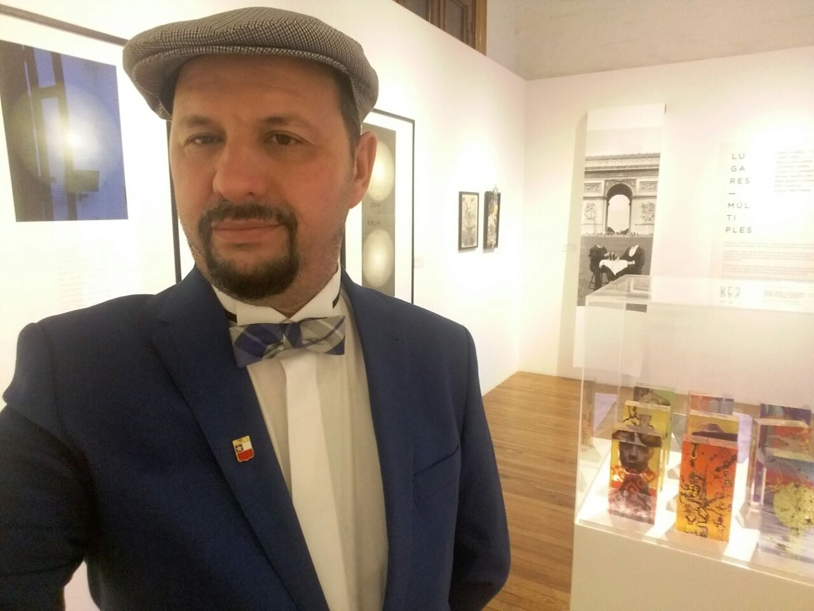
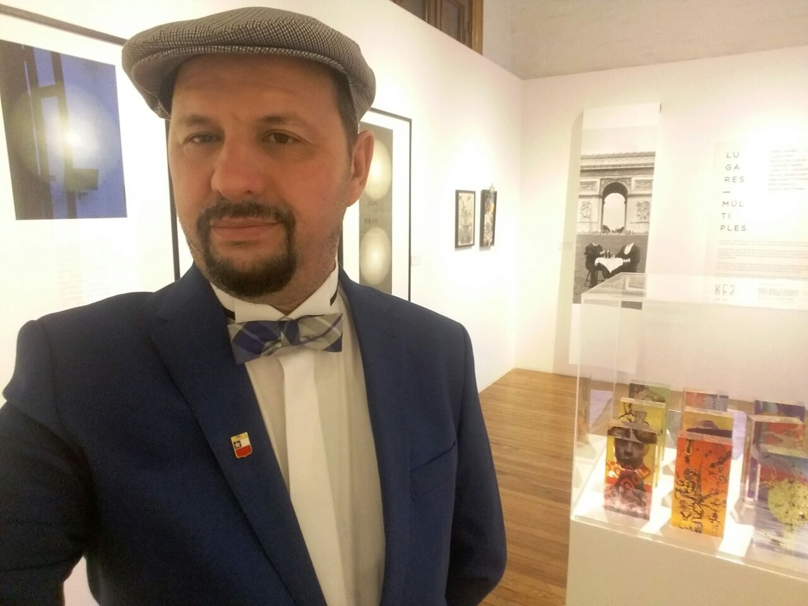

Biografía
Actor, Dramaturgo, Escritor, Poeta, nace en Talca , Chile , el 11 de Noviembre de 1966 .
Gana a la edad de 12 años estando aun en el colegio, el primer lugar en el concurso provincial de teatro en la ciudad de Curicó , siendo elegido el “mejor actor” del certamen , se traslada a Santiago a la edad de 15 años y estudia teatro en la escuela de Pedro Pavicich , actor español y profesor de artes escénicas en el colegio Salesianos Don Bosco , se presenta en la televisión a interpretar una canción de su autoría a la edad de 12 años , en el programa de Chile Films , Dirigido por Eduardo Ravanni , lo que le permite gravar su primer y único disco de vinilo con dos canciones escritas por el , grabación que se realiza en los estudios de Carlos Gonzales , destacado director musical de televisión de la época , a la par ,realiza obras de teatro en distintos escenarios dos obras que marcan su carrera son la pasión de cristo y el rey ha muerto , esta última le merece un premio en el colegio integrado de Talca , donde regresa a terminar su educación media a la edad de 18 años , siendo la primera obra dirigida por el , termina sus estudios medios y se va a Stgo . donde forma una banda de música con 2 amigos y su hermano Paulo , graban varios temas , pero luego esta se disuelve por temas de estudio y de trabajo de sus integrantes. Cada uno sigue sus distintas carreras y Enrique regresa a Talca , donde se pone a trabajar en la empresa familiar y escribe su primer libro de poemas , “ Hojas Muertas “ , se va a estudiar a Chillan a la Universidad del Bio bio , administración de empresas , ya que había entrado de lleno en la administración de los negocios familiares , escribe su primer libro “ los hombres también lloran” , luego escribe “ Corazon de Mujer” y “luego el niño que hace las Joyas” , todos escritos pero aun sin editar , el año 2016 presenta una recopilación de poemas tristes , que denomina “ lluvia Adentro” y que presenta en la casa del arte ,con la lectura de algunos de ellos . Además comienza a escribir “ del espejo y otras fuentes “ una novela dramática basada en la vida de un inmigrante . el año 2017 , escribe una novela “Los Amantes” con la cual participa en un concurso de novelas en la ciudad de Valdivia. Y es Seleccionado entre los mejores poemas para asistir a Uruguay al concurso internacional “ Versos Compartidos “ con su poema “ Sueños de agua “ el que se edita junto a los demás ganadores en un libro de versos compartidos en Montevideo – Uruguay .
 
